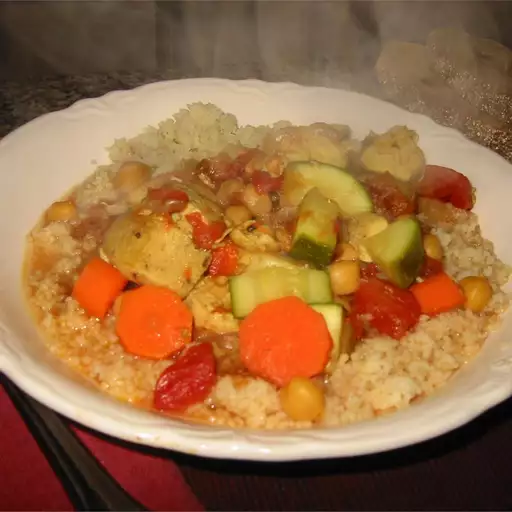

Moroccan Chicken and Whole Grain Couscous

Picture of a Moroccan Chicken and Whole Grain Couscous dish
A flavorful Moroccan chicken stew that features aromatic spices and nice vegetables served over whole-grain couscous.
This recipe was actually a real chicken contest winner! Vegetables and even meat can vary according to taste, but I
find squash, carrots, bell peppers, and lamb work well in this recipe. Even though the spices seem strange, the flavors
are subtle but fragrant. A real favorite at home.
Ingredients
- 1 cup whole wheat couscous
- 1 tablespoon vegetable oil
- 1 medium onion, chopped
- 2 bay leaves
- 5 whole cloves, crushed
- ½ teaspoon cinnamon
- 1 teaspoon ground dried turmeric
- ¼ teaspoon ground cayenne pepper
- 6 skinless, boneless chicken breast halves - chopped
- 1 (48 fluid ounce) can chicken broth
- 1 (16 ounce) can garbanzo beans
- 1 (16 ounce) can crushed tomatoes
- 2 carrots, cut into 1/2 inch pieces
- 1 zucchini, cut into 1/2-inch pieces
- salt to taste
Steps
- Prepare couscous according to package directions.
- Heat oil in a large pot over medium heat. Cook and stir onion in hot oil until tender. Mix in bay leaves, cloves,
cinnamon, turmeric, and cayenne pepper. Add chicken and cook until well browned. Pour in chicken broth, garbanzo
beans, and tomatoes; bring to a boil. Reduce heat to low and simmer for 25 minutes.
- Mix carrots and zucchini into the pot. Season with salt. Continue cooking until vegetables are tender, about 10
minutes. Serve stew over cooked couscous.
Home